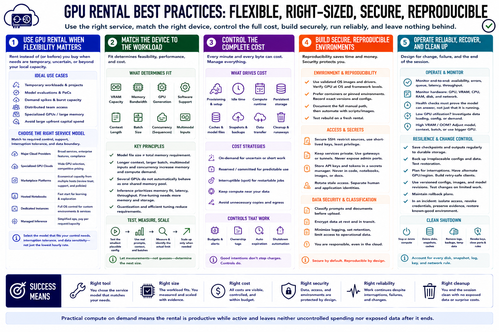

Course Summary and Key Takeaways
Connecting to LMS... Progress: in progress

Narration
GPU rental is useful when flexibility matters more than ownership: temporary workloads, model evaluations, bursts, distributed team access, and specialized memory requirements. Choose among major providers, specialized clouds, marketplaces, notebooks, dedicated instances, and managed inference according to the control, support, interruption tolerance, and data boundary the job requires.
Match the device to the workload. VRAM, memory bandwidth, GPU generation, software support, context, batch, concurrency, and multimodal inputs all influence fit. Several GPUs do not automatically behave as one. Test the smallest plausible configuration with real work and scale only when measurements identify a limit.
Control the complete cost. Include provisioning, idle time, persistent storage, caches, snapshots, data transfer, and cleanup. Use commitments for predictable demand and interruptible capacity for restartable work. Budgets, alerts, ownership tags, automatic expiration, and shutdown automation turn good intentions into controls.
Build a reproducible environment, protect SSH and API access, keep secrets out of images, and classify prompts and documents before upload. Monitor service health and hardware use, checkpoint important work, and preserve a rebuild and rollback path. When the job is complete, stop or delete compute and account for every remaining disk, snapshot, log, key, and network rule. Practical compute on demand means the rental is productive while active and leaves neither uncontrolled spending nor exposed data after it ends.